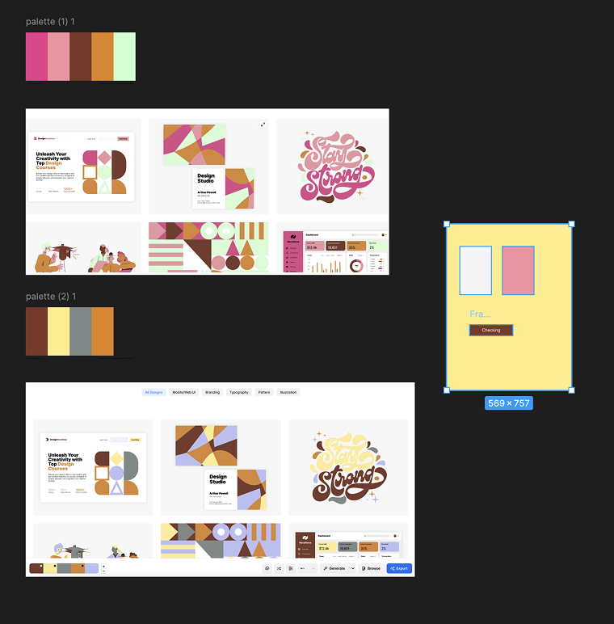
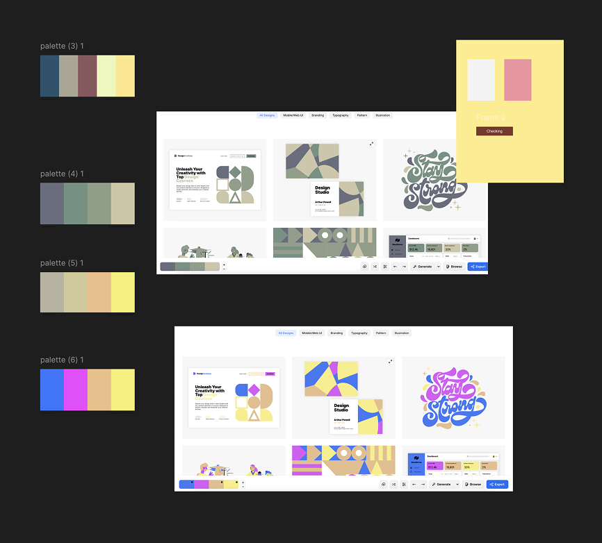
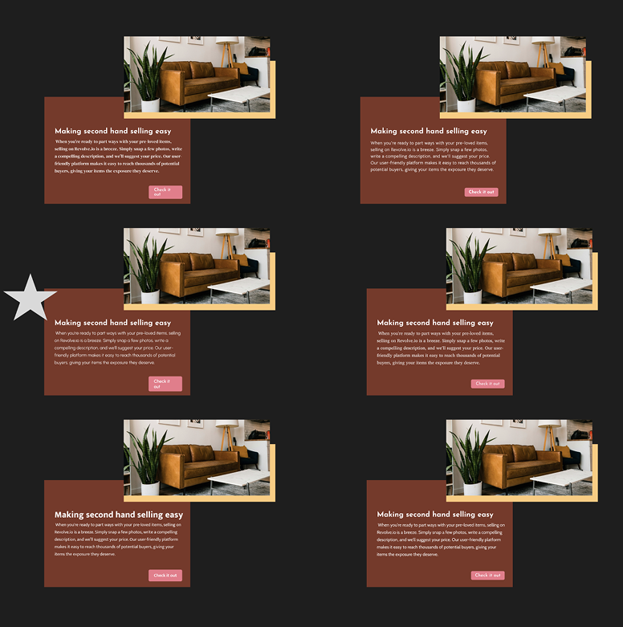

<div class="carousel-wrapper">

  <div class="carousel" id="carousel">
    
    
    
    
  </div>

  <div class="dots" id="dots"></div>

</div>

<style>
.carousel-wrapper {
  max-width: 700px;
  margin: auto;
}

.carousel {
  display: flex;
  overflow-x: auto;
  scroll-snap-type: x mandatory;
  gap: 12px;
  scroll-behavior: smooth;
}

.carousel img {
  width: 100%;
  flex-shrink: 0;
  scroll-snap-align: center;
  border-radius: 12px;
}

/* Hide scrollbar */
.carousel::-webkit-scrollbar {
  display: none;
}

/* Dots */
.dots {
  display: flex;
  justify-content: center;
  gap: 8px;
  margin-top: 12px;
}

.dot {
  width: 10px;
  height: 10px;
  background: #cfcfcf;
  border-radius: 50%;
  cursor: pointer;
  transition: background 0.3s;
}

.dot.active {
  background: #555;
}
</style>

<script>
const carousel = document.getElementById("carousel");
const dotsContainer = document.getElementById("dots");
const images = carousel.querySelectorAll("img");

images.forEach((_, index) => {
  const dot = document.createElement("div");
  dot.classList.add("dot");
  if (index === 0) dot.classList.add("active");

  dot.addEventListener("click", () => {
    carousel.scrollTo({
      left: carousel.clientWidth * index,
      behavior: "smooth"
    });
  });

  dotsContainer.appendChild(dot);
});

carousel.addEventListener("scroll", () => {
  const index = Math.round(carousel.scrollLeft / carousel.clientWidth);
  document.querySelectorAll(".dot").forEach((dot, i) => {
    dot.classList.toggle("active", i === index);
  });
});
</script>
